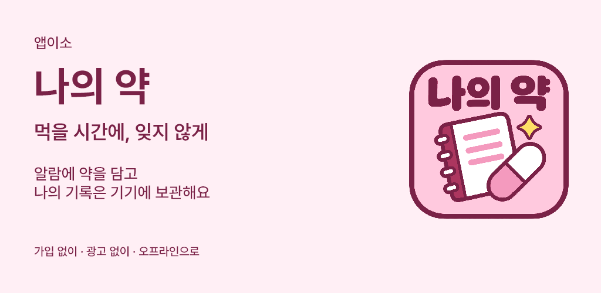
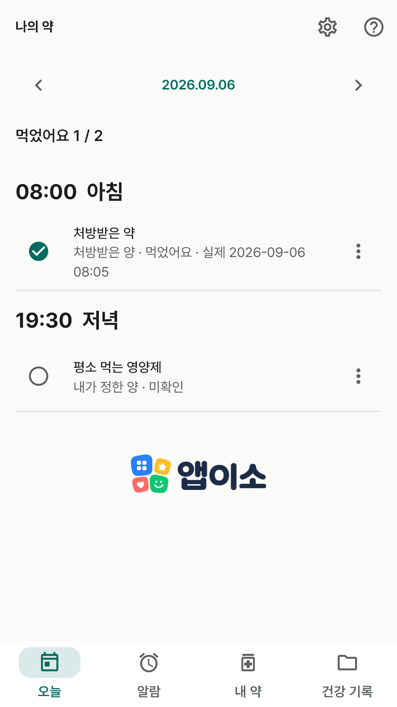
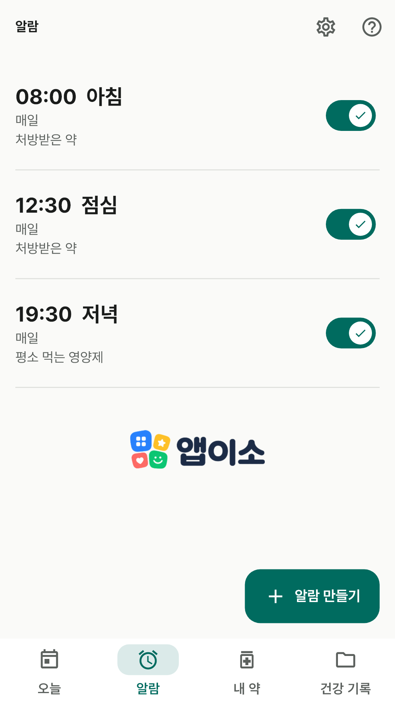
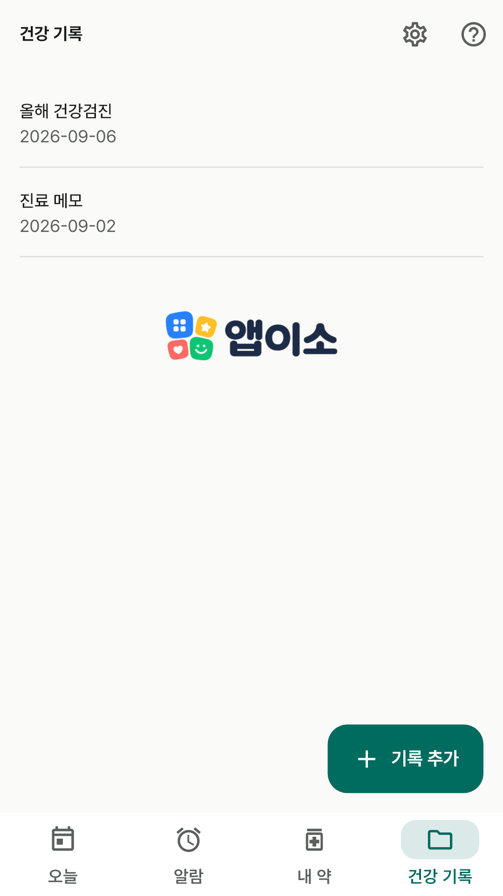
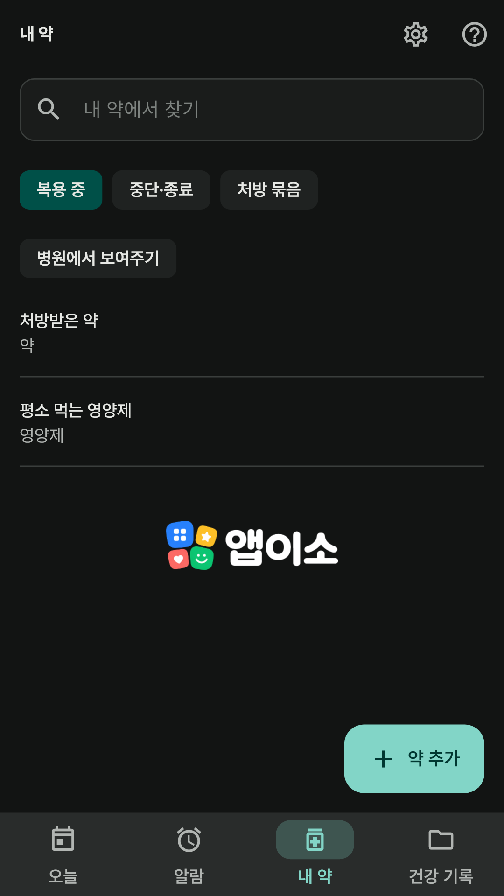
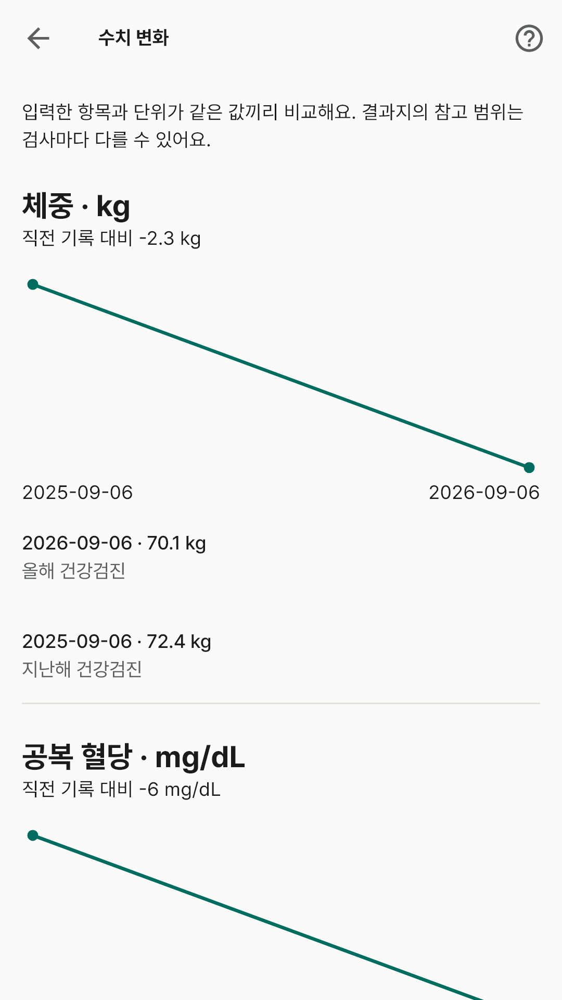
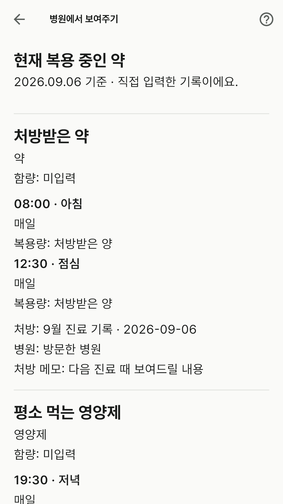
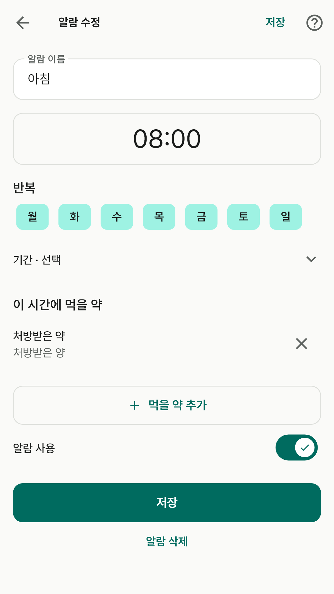

앱이소
먹을 시간에, 잊지 않게.

출시 준비 중 · Android · 가입 없이 · 광고 없이
아침, 저녁 등 시간을 먼저 정하고 약을 추가해요. 같은 약도 시간마다 다른 복용량으로 기록할 수 있어요.
먹었어요·건너뛰었어요를 개별 기록하고 예정 시각과 실제 복용 시각을 구분해요.
제품 사전에서 찾아 입력하고 처방별로 묶어요. 병원에서 보여주기로 현재 복용 정보를 크게 볼 수 있어요.
건강 기록에 사진·PDF·메모를 담아요. 수치와 재고는 필요한 사용자만 켜고, 기록은 파일로 백업해요.
화면의 약 이름과 기록은 사용법을 보여주는 가상 입력 예시예요. 설치 앱에는 예시 기록이 들어 있지 않아요.







기록·사전 검색·복용 알람은 인터넷 없이 동작해요. 사전은 심평원 2025년10월·식약처 2026년6월 공개 자료이며 일부 제품과 최신 변경이 빠질 수 있어요. 제품명·제조사·함량을 포장과 확인해 주세요.
알림은 기기 전원·강제 중지·절전·권한 설정의 영향을 받아요. 앱 삭제 전에는 직접 백업해 주세요. 백업 파일은 암호화하지 않으므로 저장 위치와 접근 권한을 직접 관리해 주세요.
나의 약은 개인 기록과 알림을 위한 앱이에요. 질병의 진단·치료·예방을 위한 의료기기가 아니며 의료 판단을 제공하지 않아요. 복용법과 진료에 관한 판단은 의사·약사에게 확인해 주세요.